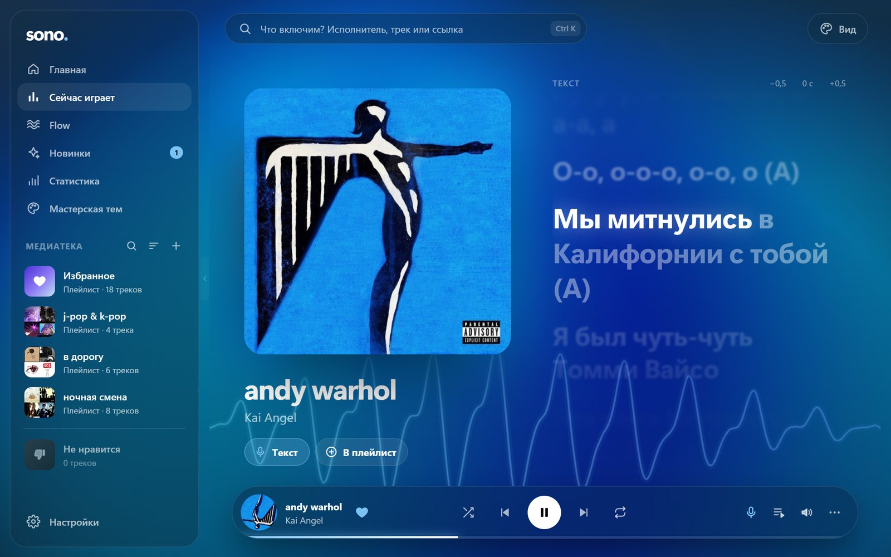
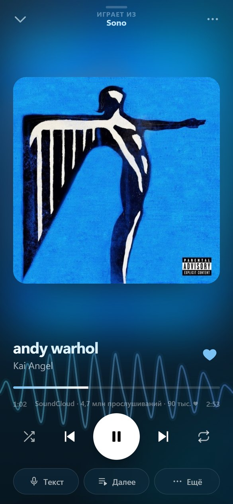
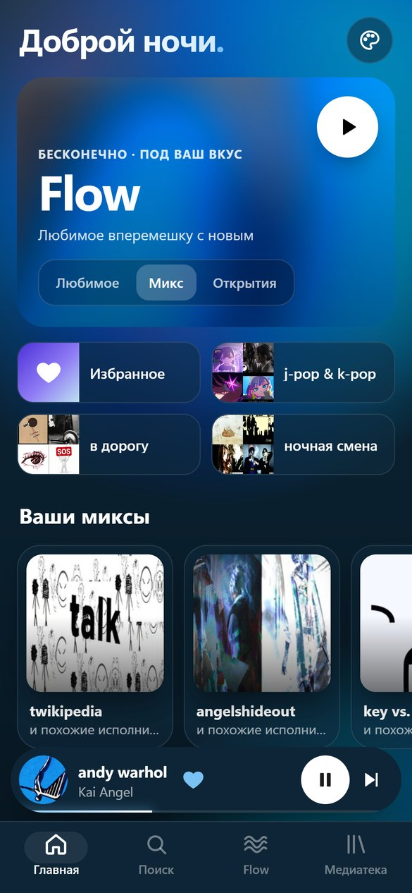
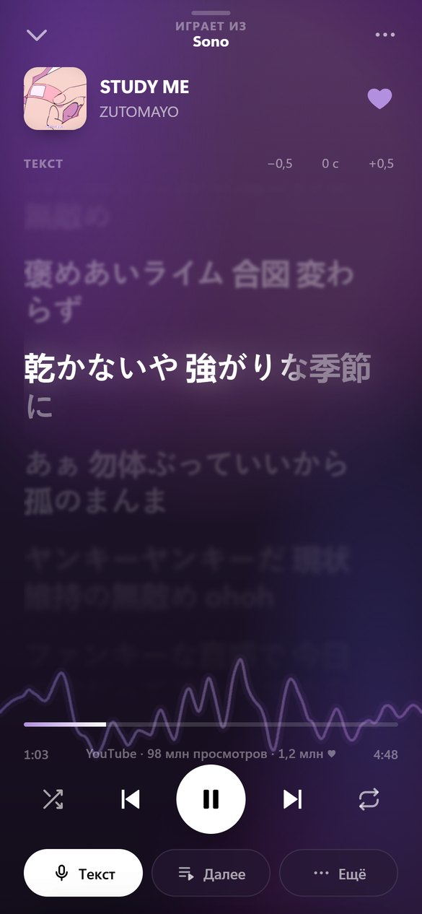

YouTube и SoundCloud в одном плеере: андеграунд, ремиксы и всё, чего нет в стримингах. Бесплатно, без аккаунтов и подписок — для Windows и Android.


Всё, за что любят большие сервисы, — и то, чего у них нет.
Бесконечная волна под ваш вкус: любимое вперемешку с новым. Можно выбрать занятие, настроение и язык.
Вставьте в поиск ссылку из Spotify, Яндекс Музыки, Apple Music или Deezer — Sono найдёт ту же запись и включит.
Кто спродюсировал и написал, когда вышел, лейбл, текст, другие загрузки и похожие треки.
Свежие релизы ваших исполнителей с Яндекса и SoundCloud — даже то, что вышло только там.
Цвета песни разливаются по всему окну и меняются с каждым треком. В «Виде» — светлая тема, свой цвет, своя картинка или GIF фоном.
Встроенный обход замедлений. Если провайдер закрыл YouTube совсем, Sono включит ту же песню с SoundCloud.
Плейлисты и «Мне нравится» из Яндекс Музыки, Spotify, SoundCloud, Apple Music и Deezer.
Текст заливается по слогам, как в караоке, клип вместо обложки, скачивание треков, эквалайзер и эффекты.
Настоящие записи экрана, без монтажа.
Та же медиатека и Flow в новом виде — в кармане. Перенести всё с компьютера — один файл.


Sono — бесплатная программа с открытым кодом. Платной цифровой подписи у неё нет, поэтому Windows и Android один раз переспрашивают.
Нужен Android 8 или новее. На телефоне встроенного обхода блокировок нет — если что-то не открывается, включите VPN.
Весь код Sono открыт на GitHub — любой может его посмотреть. Sono не просит аккаунтов и паролей, а ваша медиатека хранится только у вас на устройстве.
Sono делается для себя и друзей. Музыку он берёт с YouTube и SoundCloud, сам ничего не продаёт и ничего о вас не собирает.
Вставьте ссылку на плейлист в поиск — Sono перенесёт его в медиатеку. С Яндекс Музыки и SoundCloud можно переехать целиком: Sono предложит это при первом запуске.
Sono на компьютере сам предлагает обновиться, когда выходит новая версия. Для телефона новые версии — на странице выпусков.
В Sono: «Мастерская тем» в меню слева. Цвет, светлую тему и свой фон можно выбрать сразу — кнопкой «Вид». Темы мастерской пока сделаны для прежнего вида Sono и включатся, когда их обновят. Свою тему можно сделать в редакторе и предложить в мастерскую.
Ставится за полминуты. Удаляется ещё быстрее.